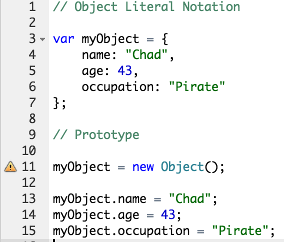
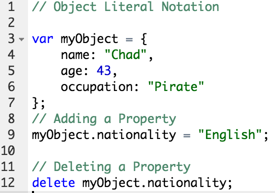
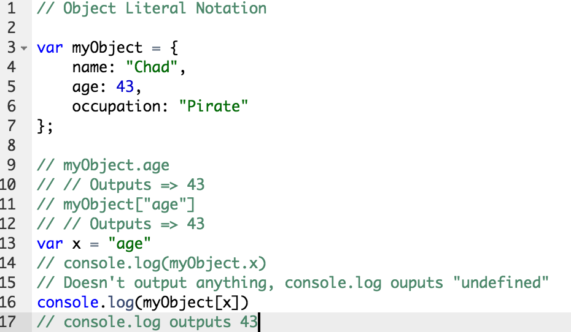

What is a Javascript Object?
Javascript object is similar to a ruby hash. It is a list of names-value pairs wrapped in curly braces. The properties is similar to a hash-key relationship. Property values can be any data type, including array literals, functions, and nested object literals.
Different Notations
First is the object literal notation where we take create a object, in this case "myObject" where we set it as a variable, equal to a "{}". In these curly brackets we define properties within them. We use name, age, and occupation for this example. In object literal notation, you must add a comma after each property until your last one.
Our second example is the prototype method of defining a object. We set "myObject" to equal to a "new Object()" This method requires us to define our properties in a constructor notation, also known as the dot-notation when accessing properties.
Properties and Values
Properties are the most important parto of any Javascript object. They allow access to values which are associated to an object. As seen in the previous example. We set properties name, age, and occupation. That associated property has the value associated "Chad", "43", and "Pirate". We can add an property to an existing object by simply giving it a value. Listed in the example below, we can simply add a property by using a dot-notatation calling our property "nationality" and value "English" for the object "myObject" To delete a property from an object is as simple as typing delete followed by the "object.property".
Bracket and Dot Notation
So far we have covered the object literal notation, part of the dot-notation, and now we will talk about bracket notation. When using a dot-notation, javascript executes the property similar to the bracket notation. However when the dot-notation is going to reference something else. It will return undefined. This sounds confusing, but the dot-notation will execute its property explicitly. Shown in the example below, the dot-notation can't return a value versus when the bracket notation can return a value. This is because the the bracket notation evaluates the the first complete statment it encounters and for each statment after.
Dot notation is faster to write and clearer to read. Square bracket notaion allows access to properties containing special charaacters and selecteion of properties using variables.
